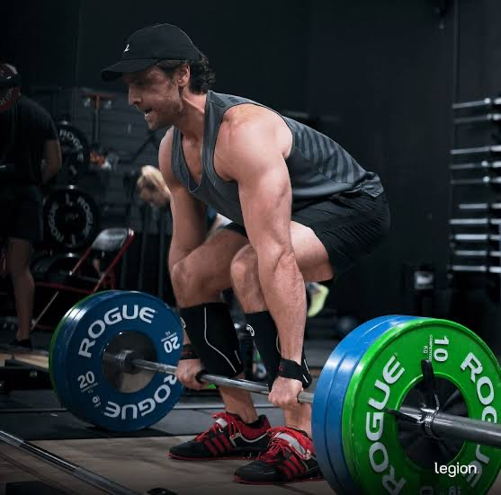
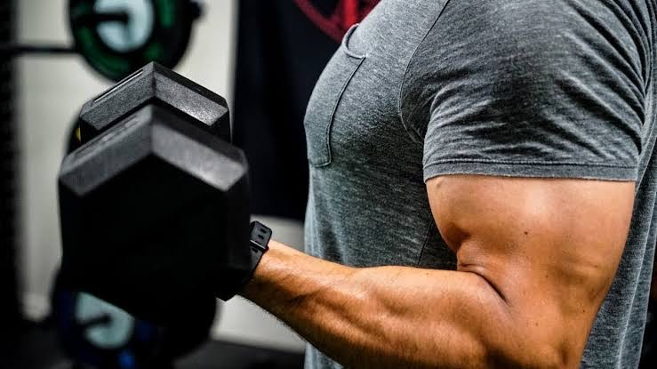
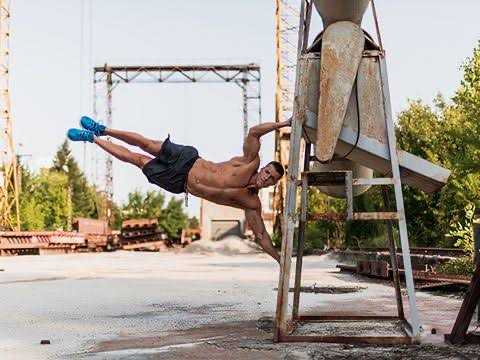
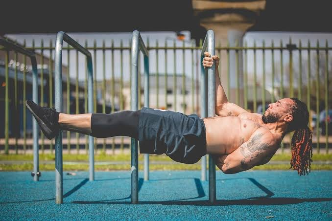

Our gym is open 24/7 and our trainers, nutritionists and others are alwalys available to guide you in your fitness journey, no matter what stage you're at.


Calisthenics
Apart from just regular weightlifting, our gym has many facilities for those who prefer calisthenics, including equipment and experts.


Here's why many consider calisthenics better than weight lifting:
Crossfit
Olympia Den is also a popular working out zone for the fitness enthusiasts that want to burn weight through HIIT and crossfit.
Diet Control
Our many nutritionists and dieticians will ensure you achieve your dream body through a balanced and personally created diet.
We provide all sorts of healthy diets depending on your need, like: